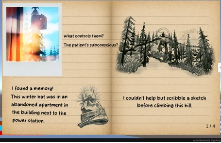

Mon expérience professionnelle, ma formation et le détail de chaque année de BUT.
Mes expériences professionnelles en entreprise
Je recherche activement un stage de 16 semaines à partir du 19 janvier 2027 en développement logiciel, développement web ou data/IA. Objectif : mettre en pratique mes compétences en C#/ASP.NET Core, Python, Vue 3, PostgreSQL et contribuer à des projets concrets en entreprise, en France comme à l'étranger.
Durée : 16 semaines
Début : 19 janvier 2027
Domaines : Développement logiciel, développement web, data & IA

Studio de jeux vidéo indépendant (Pers-Jussy) dirigé par Maxime Bernard. Conception et développement en autonomie du système Discovery Diary (journal découvrable in-game) pour le jeu The Inspector sous Unity : ~2 400 lignes réparties sur 12 scripts C#, Notification Manager, Big Notification synchronisée à l'audio, outil éditeur PSB Importer, persistance via variables Lua et support de 5 langues.
Gain de performance : 2 → 84 FPS sur la scène de test
Stack : Unity 2019.4.41f1, C#, Pixel Crushers Dialogue System
Game designer sur le serveur Minecraft MagicalSky (magicalsky.fr). Création et configuration de mobs avec MythicMobs, développement d'outils personnalisés avec MMOItems. Création de serveurs privés et plugins avec Paper. Modélisation 3D de mobs avec Blockbench, compétence acquise grâce à mon expérience CATIA à l'ENIB. Force de proposition pour de nouvelles fonctionnalités et solutions techniques. Travail collaboratif au sein d'une équipe de 13-14 personnes.
Compétences : Java, MythicMobs, MMOItems, Paper, Blockbench, Travail d'équipe
Conseil personnalisé aux clients sur les équipements sportifs, gestion des stocks et mise en rayon. Développement de compétences en relation client et travail d'équipe dans un environnement commercial dynamique.
Préparation et mise en valeur des produits de boulangerie, contrôle qualité et respect des normes d'hygiène. Gestion de la relation client et travail en équipe dans un contexte exigeant.
Mon cursus et mes diplômes
Formation en informatique à l'IUT d'Annecy, parcours Réalisation d'Applications : développement d'applications, architecture logicielle et gestion de bases de données.
École : IUT Annecy - Université Savoie Mont Blanc
Année préparatoire intégrée à l'École Nationale d'Ingénieurs de Brest.
École : ENIB - Brest
Baccalauréat général avec spécialités Mathématiques et NSI (Numérique et Sciences Informatiques).
Lycée : Lycée Sainte-Thérèse - Quimper
Lauréat (1re place) du concours Cordées de la réussite en classe de Première : analyse d'un réseau de lycéens par la théorie des graphes, avec Python et Graphviz.
Lycée : Lycée Sainte-Thérèse - Quimper
Les matières, projets et travaux marquants de chaque année du Bachelor (BUT) Informatique à l’IUT d’Annecy
Dernière année, avec des cours dispensés en anglais à l’initiative de l’IUT et de ses étudiants : qualité logicielle, automatisation et premiers modèles d’IA, avant un stage de 16 semaines dès janvier 2027.
Audit de mes dépôts (octobre 2026) : des identifiants de développement, aujourd'hui inactifs, figurent encore dans l'historique de projets de 1re et 2e année. Je les laisse visibles comme trace honnête de mon apprentissage. Depuis la 3e année, aucun secret réel dans mes dépôts, et ce portfolio vérifie automatiquement l'absence de secrets dans tout son historique (gitleaks) à chaque modification.
Applications web complètes en équipe, bases de données avancées, réseaux et mobile, puis un stage de 8 semaines en studio de jeux vidéo. Major de promotion en mathématiques, 16,5/20 de moyenne au dernier semestre.
Programmation orientée objet en C#, premières interfaces graphiques et bases de données, et premiers projets en équipe avec Git.